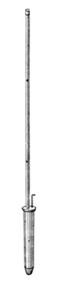

|
Musette French Sackpfeife German |
A reed stop of 8' or 4' pitch, imitating more or less the instrument of the same name, a small bagpipe. It has been made in a number of forms, employing both free and beating reeds. Regnier (by way of Audsley) gives it half-length �pyramidal� resonators. The earliest description we have comes from Dom Bedos, along with the larger of the two illustrations reproduced here:
The Musette is a reed stop with inverted conical [spindle] resonators of pure tin, posessing the full compass of either the Positif or Grand orgue. Although the resonators be of 4' length, this stop speaks at 8' pitch. Its tone is somewhat lighter than that of the Cromorne, and it resembles that of a bagpipe. This stop is still rather unfamiliar in France.
Figure 143 shows a Musette pipe. Its top P, is one-half the dimension of its bottom, O. Aside from this, it resembles the Cromorne.
Bonavia-Hunt describes it as being essentially a small-scaled Clarinet with an Orchestral Oboe shallot, and a cylindrical resonator no more than 3/4" in diameter at 2' C. He goes on to say:
A more quaint and pastoral timbre is secured by using a clarinet shallot, the apex of the V-shaped opening being cut at a distance of a fourth from the head or base, while the narrow orchestral shallot with its saw-cut opening makes the tone thinner and freer.
Adlung and Locher consider it equivalent to the Schalmei. Wedgwood also considers it to be, in his time, practically synonymous with the Chalumeau, calling its tone thin, piquant, and similar in the treble to the Cor Anglais. He provides the smaller of the two illustrations reproduced here with the following description:
The figure represents a form of Musette invented by Mr. John H. Compton, of Nottingham [England]. The pipe is capped at top, but at about one-third of the length of the pipe, measured from the top, is pierced a small round hole. The upper portion of the pipe, acting as a resonating chamber, imparts a very quaint and �pastoral� effect to the tone. The tubes, which are approximately half-length, and made of pure tin, are of very narrow scale, and the tone, consequently, is very thin and delicate.
Audsley describes it as a free reed with very small scale inverted conical tin resonators, with tongues similar to those of the Cor Anglais, but narrower and thinner at the free end. Skinner gives it slender shallots and thin tongues.
Irwin claims it has extremely narrow 1/8 to 1/4 length resonators, and says: �Certain types are pierced by small holes in certain harmonic positions Caps of various types may dampen certain ranges of partials. Some ranks have narrow, miniature flared bells.� He describes its tone as moderately soft, brilliant, piercing, plaintive, nasal, and pleasant.
Williams reports that, prior to being used for a normal stop, the name Musette was used for a �toy� stop similar to the Cornamusa.
According to Strony a few Musettes were placed in theatre organs by Wurlitzer and others.
See also Cornemuse, Gaitas, and Pomart.Osiris contains thirty examples of Musette at 8' pitch, fifteen at 4' pitch, eight at 16', and one at 2'. The oldest ones are listed below. We know of no examples of Sackpfeife. Contributions welcome.
Musette 8', Recit Expressif; La Madeleine, Paris, France; Cavaillé-Coll 1846.
Musette 8', Solo Expressif; Albert Hall, Sheffield, England; Cavaillé-Coll 1873.
|
Original website compiled by Edward L. Stauff. For educational use only. Musette.html - Last updated 21 August 2003. |
Home Full Index |
{kind=link}